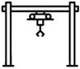
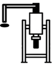
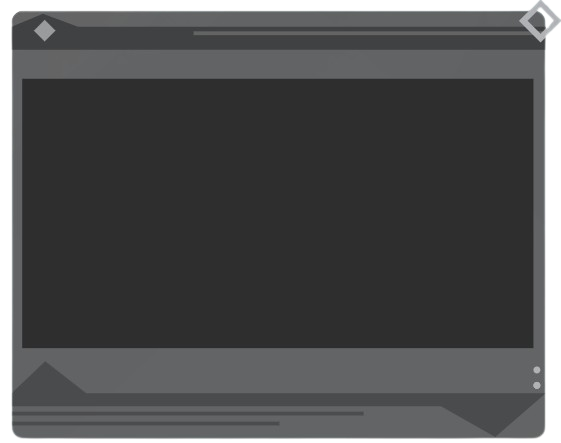

<main class="content-wrapper">

    <!-- ===== 左側設備控制區 ===== -->
    <section class="control-section">

        <!-- 左側機台選單 -->
        <div class="machine-menu">
            <div class="menu-item active">
                
            </div>
            <div class="menu-item">
                
            </div>
            <div class="menu-item">
                
            </div>
                        <div class="menu-item">
                
            </div>
                        <div class="menu-item">
                
            </div>
        </div>

        <!-- 輸送機區塊 -->
        <div class="machine-panel">

            <div class="machine-title">輸送機1</div>

            <div class="machine-image">
                
            </div>

        </div>
    </section>


    <!-- ===== 右側控制看板 ===== -->
    <section class="control-board">

        <div class="board-bg">
            
        </div>

        <div class="board-content">

            <div class="control-row">
                <div class="control-label">確認工作時間</div>
                <div class="control-adjust">
                    <button>-</button>
                    <div class="time-box">5 sec</div>
                    <button>+</button>
                </div>
            </div>

            <div class="control-row">
                <div class="control-label">輸送帶停止時間</div>
                <div class="control-adjust">
                    <button>-</button>
                    <div class="time-box">0.5 sec</div>
                    <button>+</button>
                </div>
            </div>

        </div>

    </section>

</main>